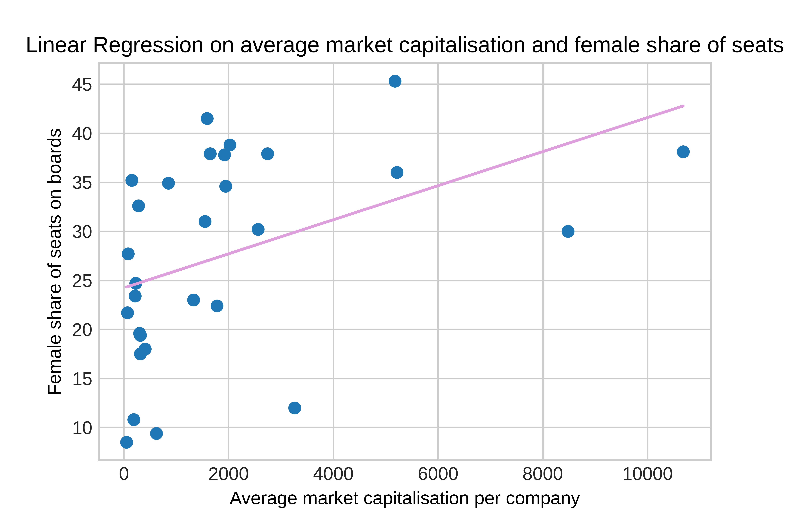

Homework 1
Set up web page and embed two charts.
Inward FDI
My first chart looks at foreign direct investment into the UK.
Bank Rate
My second chart looks at interest rates in the UK.
Set up web page and embed two charts.
My first chart looks at foreign direct investment into the UK.
My second chart looks at interest rates in the UK.
Add two charts of IMF lending, with the second chart "improving" the data.
This bar chart displays total IMF credit outstanding for all members from 1984 to 2022.
This bar chart displays IMF credit outstanding as a percentage of GDP from 1984 to 2021. To calculate the percentage, I divided the total IMF credit by world GDP.
The second chart shows that the "riskiest" year for markets was 1984 when IMF credit outstanding as a percentage of GDP was at its peak.
Add two charts with data source defined inline, the second of which modifies the first with a different visual encoding.
This bar chart shows the proportion of seats in national parliaments that are held by women from 1997 to 2021.
I redisplayed this data using a line chart as it is clearer to see the individual percentages for each country.
Add a chart using a scraper in Python.
This chart shows the highest innings totals scored by each batting position.
I chose this chart because there was no csv link to the data so a scraper was useful to obtain the data. This is the link to my Google Colab for Homework 4.
Use the ONS API to add nine different series as JSON files, using these to create nine charts.
This is the link to my Google Colab for Homework 5.
Produce two maps: a base map and a choropleth.
Hover over the country to see the country name.
This map displays total, male and female labour participation rates worldwide.
Produce two charts that support or refute an argument made at the Festival of Economics.
In the Prices and Wages talk, it was argued that deflation is always bad.
Link to Google Colab used for this chart.
Note that inflation is shown by the green bars, and consumption expenditure is shown by the blue line.
The charts show that the impact of deflation is dependent on its cause, as evidenced by the different effects on the economies of Japan, who experienced asset prices falling, and Spain, where inflation was triggered by lower production costs.
Produce two charts that use advanced analytics.
Conduct an applied data analysis using machine learning techniques.
My hypothesis was that the success of firms, measured using market capitalisation is positively correlated with female representation on boards in companies.
The chart shows the results of the regression with a positive R squared of 0.18, demonstrating a positive relationship.
Link to Google Colab used for this data analysis.
My hypothesis was that PCA on different measures of gender equality in leadership positions in the FTSE 100 companies could be used to identify which sector the company belongs to.
The chart shows that the sector of a company does not necessarily dictate its characteristics concerning gender equality in leadership positions, although it is worth noting that companies in the Industrial Goods & Services sector do seem to be clustered together.
Link to Google Colab used for this data analysis.